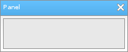

Löve Frames - The Panel Object
Return to Index
Information
The panel object has nothing unique about it. It is simply meant to be a parent object for other objects.
Example Use
local frame = loveframes.Create("frame")
frame:SetName("Panel")
frame:SetSize(210, 85)
frame:CenterWithinArea(unpack(demo.centerarea))
local panel = loveframes.Create("panel", frame)
panel:SetPos(5, 30)

Event Callbacks
The panel object has no unique event callbacks.
Methods
The panel object has no unique methods.